Click image to zoom · Esc to close
How a six-day build replaced a swimming pool's paper rota and group-chat chaos with a pocket app where teachers and lifeguards pick their own shifts — and the software refuses to let the dangerous mistakes happen.
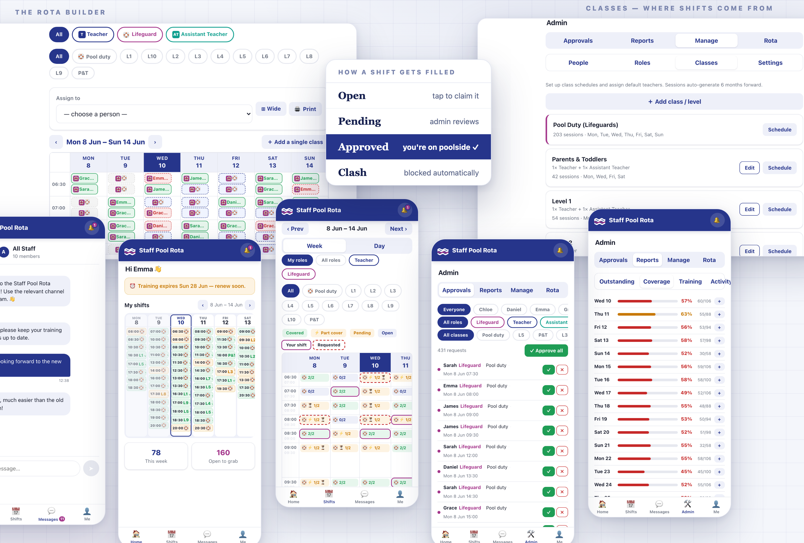
A busy public swimming pool runs on half-hour blocks. Every block needs a lifeguard on poolside — that's a safety requirement, not a preference. On top of that, the swim school runs classes all evening: ten levels plus Parents & Toddlers, each with its own staffing rule, taught by part-timers who often hold more than one qualification and whose lifeguard certificates expire.
Until recently all of that lived where it lives at thousands of pools: a printed grid in the staff room, a group chat full of "can anyone take Tuesday 6pm?", and one coordinator holding the whole thing in their head. This is the story of the small, deliberately boring app that replaced it — 75 commits across six days, three runtime dependencies, audited end-to-end five times, and now live in production for real staff.
Strip the problem to its bones and a rota is a grid of promises: this person, this half hour, this role. Everything that makes it hard is what happens to that grid under pressure. Two people promise the same slot. Someone promises a slot they're not qualified for. A lifeguard's certificate quietly lapses in week three. A class gets cancelled and its promises linger like ghosts. The coordinator is the only error-checker, and the coordinator is human.
Staff pull the shifts they want from their phones, an admin keeps one-tap control over everything, and the system itself makes the dangerous states — double-bookings, unqualified cover, phantom shifts — impossible to represent rather than merely discouraged.
That last clause did most of the work. The interesting engineering in this project isn't a clever algorithm — it's a long list of small refusals: an approve button that disables itself when a clash exists, a booking that returns "that shift was just taken" instead of a polite lie, a schedule editor that counts the orphans before it lets you create them.
The app's one organising idea: the weekly class timetable is data, and the rota is generated from it. An admin describes the schedule once — "Level 5 runs Monday and Wednesday at 17:00, one teacher" — and the system materialises every individual, bookable person-shift 26 weeks into the future, rolling the horizon forward every day on its own. Lifeguard cover isn't even described per class: a lifeguard shift simply exists for every half hour the pool is open.
Each generated shift is then a tiny state machine that staff and admins push around. The week timetable view paints every block with its state, so a glance tells you where the gaps are:
A sketch of the week grid's colour language — in the app, part-cover glows amber, pending shifts wear a dashed red outline, and the lifeguard buoy 🛟 marks duty cover.
Requests flow one way and approvals flow back: staff tap, admins confirm. Before any shift changes hands the server re-checks the two rules that matter — is this person qualified for this role, and are they already booked at this time — and the second rule is enforced in a way that survives two people tapping at the same instant. More on that in Part seven, because it turned out to be the hardest thing in the whole build.
Staff log in and land on their week: a compact seven-day grid of their own shifts — green when approved, amber while pending, the buoy for lifeguard duty, L5-style codes for classes — plus a live count of what's open to grab. If their lifeguard training is within thirty days of expiring, a banner sits at the top of the page where it cannot be ignored. The data behind that banner has teeth, too: training status is computed server-side and surfaces in the admin's compliance report.
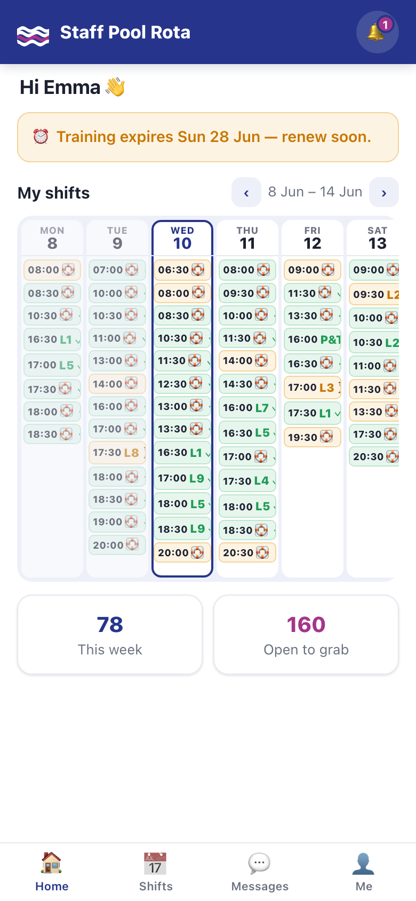
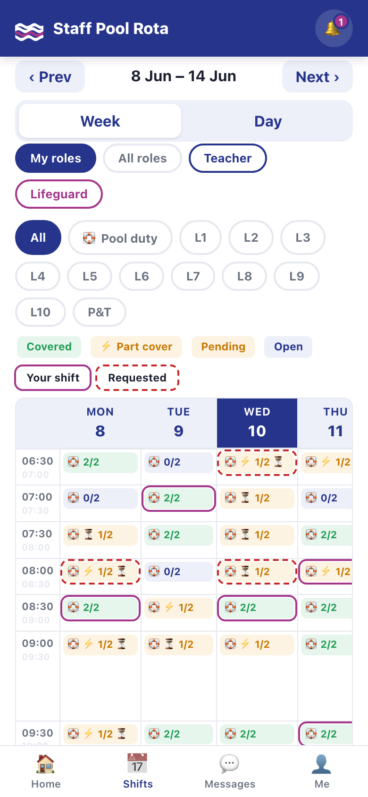
Tap an open block and you've requested it — the qualification and clash checks run before the server says yes, and the admins are notified instantly. A day view presents the same shifts as tappable cards for people who think in lists rather than grids. And the profile page closes the compliance loop: staff record their own training expiry date, see their qualified roles, and manage their password.
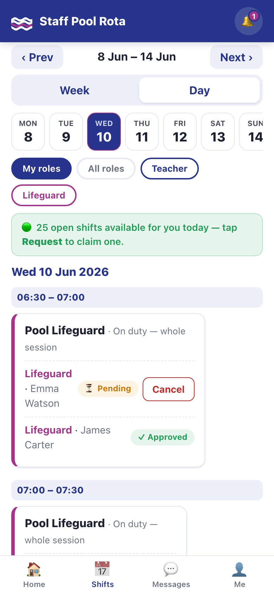
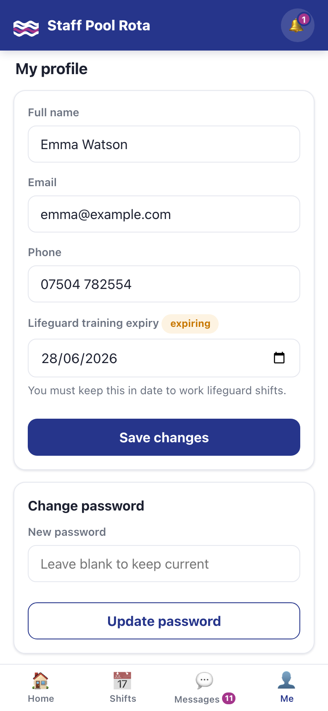
Admins get everything staff get, plus four tabs: Approvals · Reports · Manage · Rota. Their home page leads with the thing that needs attention — the size of the approvals backlog — and one tap lands them in the queue.
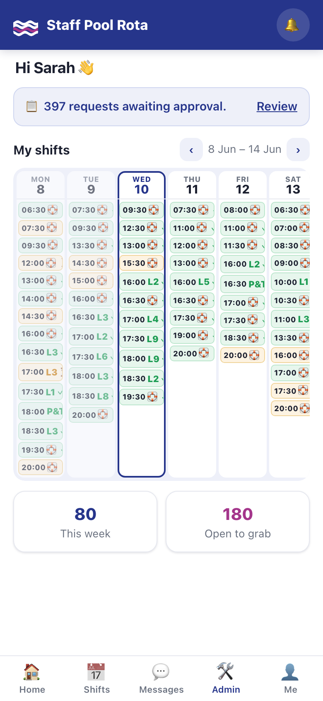
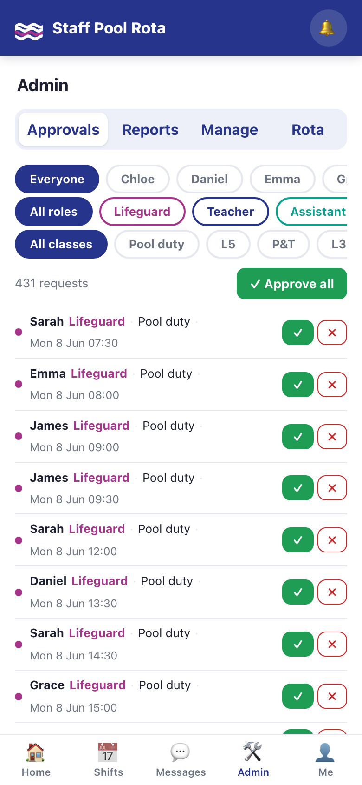
Three details in this queue earn their keep. If a request now clashes with a shift the person has since been approved for, the row says so inline and the approve button is disabled — the bad state is unrepresentable. Declines carry a reason, delivered to the person as a direct message rather than a mystery. And contested slots show who else has requested them, so the admin is choosing, not guessing.
For the manager who'd rather place people than wait for requests, the Rota tab is the power tool: pick a person, tick any number of cells across the week — across roles, with an "All roles" view that colour-badges every cell — and assign them all in one shot. Anything that can't be assigned comes back as a detailed skip report: already taken, not qualified, clashes with their 17:00 — with times. Never a silent partial success.
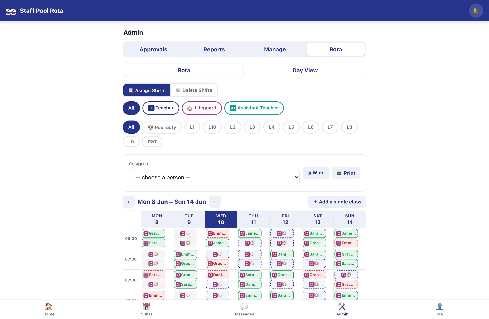
Manage → Classes is the single source of truth everything generates from: every class, its staffing rule, its weekly sessions with − / ＋ steppers. And because six months of future shifts already exist, every edit here is a small migration problem — handled honestly. Remove a session and the editor counts the already-generated shifts that no longer match, tells you how many have real people booked on them, and offers the humane default: keep the booked ones as stand-alone one-offs, clear the rest, notify everyone affected. Automatically.
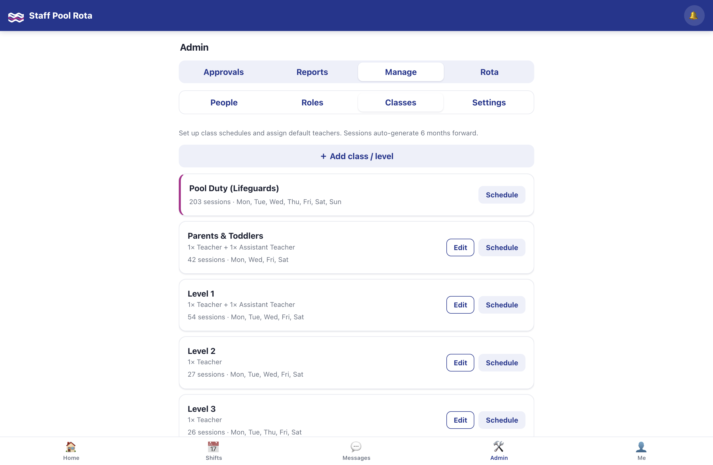
Outstanding lists every unfilled shift for the next month, with CSV export for the committee. Coverage compresses each day into a single bar and a percentage — the five-second health check. Training is the compliance view: every lifeguard, sorted so expired and expiring float to the top. And an Activity log records every action in the system — who approved what, who deleted what, when.
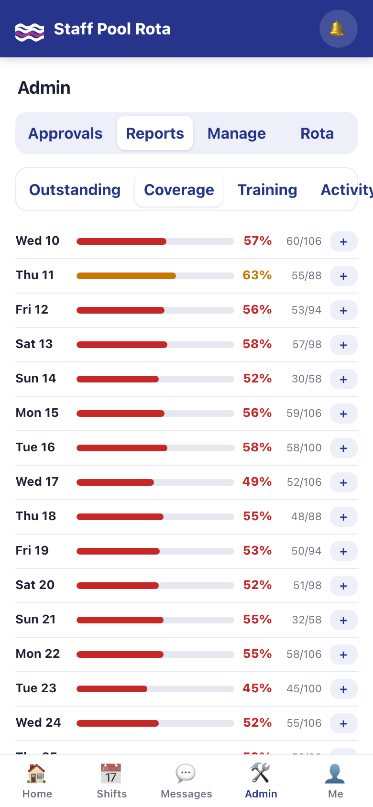
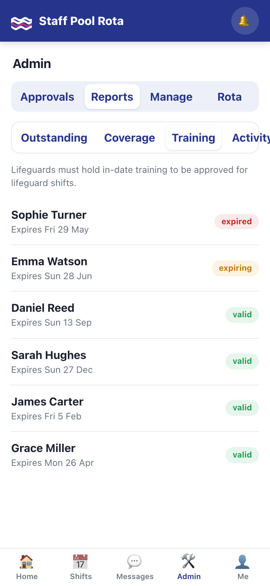
Staff were always going to coordinate by chat — the only question was whether the chat would live next to the rota or against it. So it moved in: an All Staff channel everyone belongs to, role-linked channels (add someone to the Lifeguard role and they're in the Lifeguards channel automatically, remove the role and they're out), and a private Message Admins line for every member of staff. Delivery is real-time, with unread badges on the tab bar.
The quiet win is that the conversation and the audit trail became the same thing. Declined requests arrive with their reasons. Removed shifts arrive with their reasons. When a schedule change cancels someone's bookings, the apology arrives itemised — date by date — in the same thread they'd use to ask about it. Deleted channels are archived with their history, not erased.
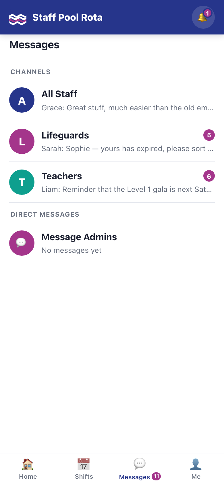
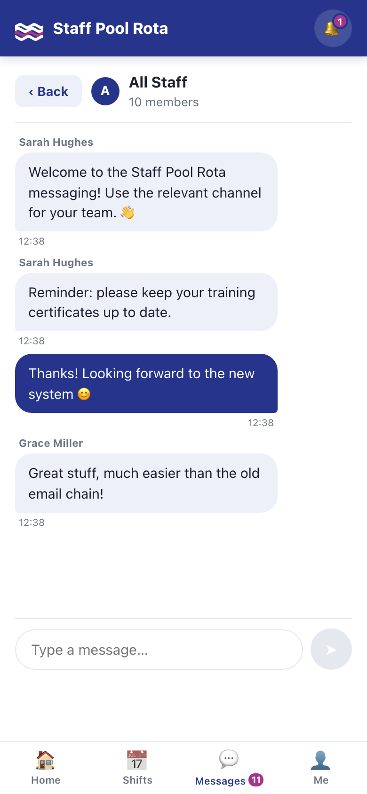
The entire backend is FastAPI and SQLite: about 2,600 lines of Python in five files, with passwords hashed and session tokens signed using only the standard library. The frontend is a single vanilla-JavaScript file, one stylesheet, and a 48-line service worker. No React, no bundler, no node_modules, no build step. The complete dependency list fits on three lines:
This is a tool one person maintains for one site. Every framework you don't adopt is an upgrade treadmill, a build failure and a dependency alert you never have. The whole system can be read end-to-end in an afternoon — which, as Part eight shows, is precisely what made it possible to audit five times in a week and actually fix everything found.
It's still a real app on the phone, because it's a progressive web app: installable to the home screen with its own icon, app shell cached so it opens instantly and survives flaky leisure-centre wifi — while rota data itself always comes fresh from the network. No app store, no review queue. Shipping an update is bumping one version string; the count of those bumps is a brutally honest release counter, and it currently reads 62.
Here is the hardest problem in the build, and it looks like nothing at all. The app's core promise is who holds which shift — and the moment it's most useful is the moment the new rota opens and everyone grabs at once. Which is exactly when naive code corrupts it.
The original booking code did what almost every web app does — and it's wrong.
Emma and James both tap the same open lifeguard shift within a few milliseconds. The server, handling both requests in parallel, runs the same three steps for each: read the shift — check it's open — write your name on it. Both reads happen before either write. So both checks pass. Both writes succeed, the second silently overwriting the first. Both phones say "Requested ✓". Only James actually holds the shift; Emma finds out at the poolside, or never.
The fix is two disciplines, applied to every state change in the app:
Lose the race now and you get an honest message instead of a false success. The same pattern guards request, approve, assign, bulk-assign, delete, restore, release and decline — every door to the rota, not just the front one.
And it isn't taken on faith. The test suite boots a real server and fires genuinely simultaneous requests — threads released by a starting gun — at one slot: six users must produce exactly one success and five polite refusals. A person double-tapping two overlapping slots must end up holding exactly one. Those tests failed against the original code, and they've pinned the fix down ever since.
Build fast and trust the result — the only way to have both is to re-read everything with hostile eyes, repeatedly. The app got five full audit passes during the six days, each one a fresh read of the entire codebase, each finding fixed (or explicitly accepted, in writing) before moving on. The trajectory is the point:
| Pass | Headline findings | Outcome |
|---|---|---|
| 1–2 | The booking races of Part seven; no login rate-limiting; default admin credentials shipping; timezone drift; bad input returning server errors; zero tests | all fixed · 7 tests |
| 3 | Deleted shifts still counted in coverage — and could still be claimed; schedule edits stranding orphaned future shifts; proxy and origin-exposure issues on the production deployment | all fixed · 8 tests |
| 4 | Deactivating a staff member left their future shifts as phantom cover; the slot-generation horizon could stall; five smaller validation gaps | all fixed · 13 tests |
| 5 | One unescaped tooltip (a stored-XSS sliver — the only miss among 134 escaped outputs); the last two unguarded admin races; a channel-membership leak; retired roles still generating shifts | all fixed · 16 tests |
The app escapes every piece of user text before showing it — names, messages, reasons — through one helper used 134 times. Audit five found the single place it was skipped: a hover tooltip in the rota builder. Because staff can edit their own display name, a name containing a quote mark could have smuggled code into an admin's browser. One line to fix. The lesson is as old as the web: escaping is only as strong as its least-glamorous attribute.
What five passes buy, concretely: the first audit found "two people can both be told they own the same shift." The fifth found "a tooltip doesn't escape quote marks." That gradient — from integrity-breaking to edge-case — is what done looks like for an app this size.
Production is one Docker container behind Caddy on a $6-a-month droplet, fronted by Cloudflare on strict TLS with an origin certificate. The proxy adds the security-header set; login rate-limiting reads the real client address through Cloudflare so it can't be spoofed around; the entire database is one SQLite file, which makes the backup strategy copy one file. A fresh install is safe by default — demo credentials hidden, seeded admins forced to change their password on first login. And deploying a change is one line:
One honest limitation, accepted in writing: the real-time chat fan-out and the rate limiter live in process memory, so the app runs a single worker — a deliberate ceiling that one pool's traffic doesn't begin to approach. The multi-pool version (Postgres, a shared message broker) is documented but intentionally unbuilt. Knowing where your ceiling is beats pretending you don't have one.
Next on the list, in order: push reminders ("you're on poolside in two hours" — and "your training expires in 30 days" before it becomes a staffing problem); staff-to-staff shift swaps with admin sign-off; and class registers, which the schedule already knows enough to generate.
But the real takeaway is about proportion. The glamour in this project is the phone app — the week grid, the colour language, the chat. The value turned out to be in the refusals: the conditional write that tells the truth under a race, the approve button that disables itself, the schedule editor that counts orphans before creating them, the audit that re-reads everything a fifth time and finds one unescaped tooltip. Rotas are promises. Software that keeps promises is mostly software that refuses, politely, to break them.
Built with FastAPI, SQLite and vanilla JavaScript; Caddy and Docker in production behind Cloudflare. All screenshots are the live app populated with demonstration data; names shown are demo accounts. The full audit reports — all five passes, findings and fixes — live alongside this post in the project repository.